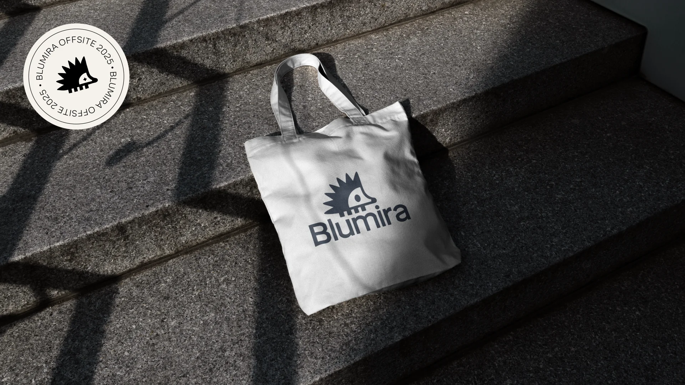
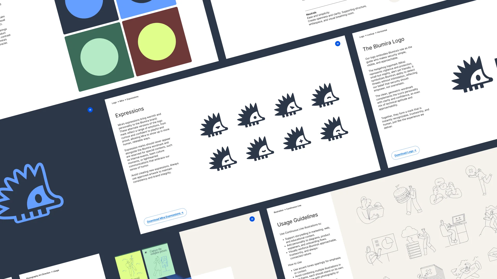
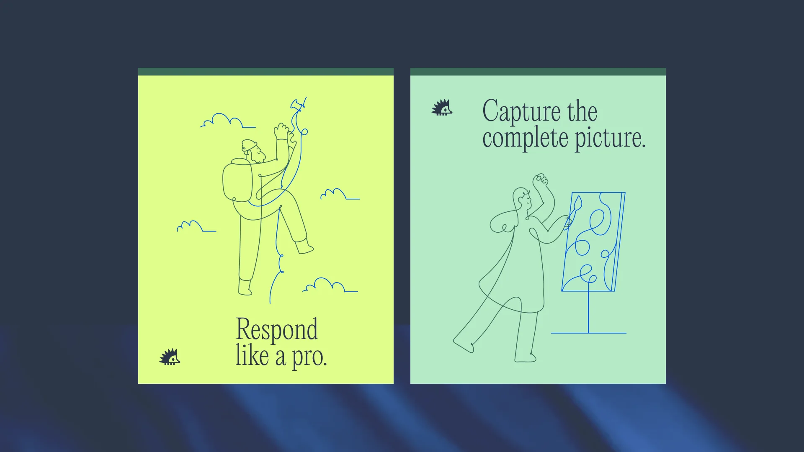
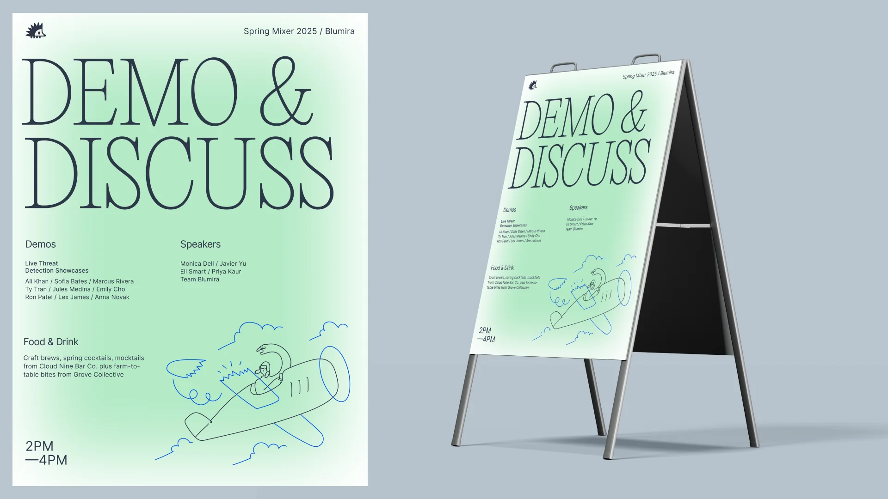
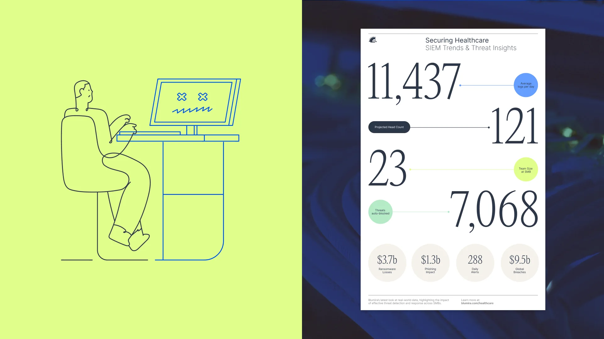

Blumira
- Role
- Creative Director, Lead Brand Designer
- Team
- 3 people
- Discipline
- Creative direction · Brand identity · Animation
Project Summary
Blumira is a cybersecurity platform making threat detection and response simpler and more accessible. As Lead Brand Designer, I led the evolution of its visual identity, developing a cohesive brand system that balances technical credibility with an approachable, distinctive personality. The work spanned brand strategy, logo development, typography, color, illustration, and art direction, creating a flexible visual language designed to scale across marketing, product, and digital experiences.
Team
- Aaron Johnstone, Motion Designer
- Ruth Facer, Delivery Lead
Shawn’s Role
- Creative Director
- Lead Brand Designer


Each illustration is created from a single, unbroken line, symbolizing connection, vigilance, and flow.

Each color expresses a facet of Blumira’s personality. Use them with intention to convey mood and hierarchy.





